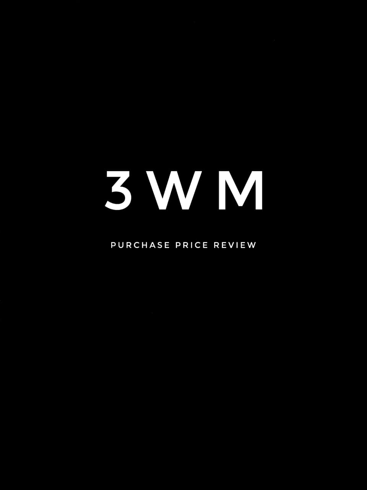

Billable Project
Bentham Science
Custom invoice automation package built around custom invoice records and downstream invoice/payment creation.
CRW-I is the strongest ownership phase in the Crowe journey so far. The work mixes a billable finance-automation client project with two internal control-focused products, moving the delivery style deeper into business controls, policy enforcement, and transaction-governance behavior.
This phase is less about isolated integrations and more about systems that govern what the business is allowed to do: price-review controls, mandatory-segmentation rules, and finance-automation against custom record models.
Custom invoice automation package built around custom invoice records and downstream invoice/payment creation.

PPRL-based control framework for reviewing vendor-bill variances before approval, receiving, and payment.

Conditional Department, Location, and Market Sector enforcement based on account rules across UI and CSV contexts.
The full-time phase goes beyond integration or document formatting. It starts encoding business policy directly into NetSuite behavior: what can be approved, what must be reviewed, and which segments must exist before posting.
AIR turns account-driven segmentation policy into transaction validation.
3WM enforces business review before bills can proceed into approval and payment.
Bentham keeps the client-facing side active with custom-record driven finance output.